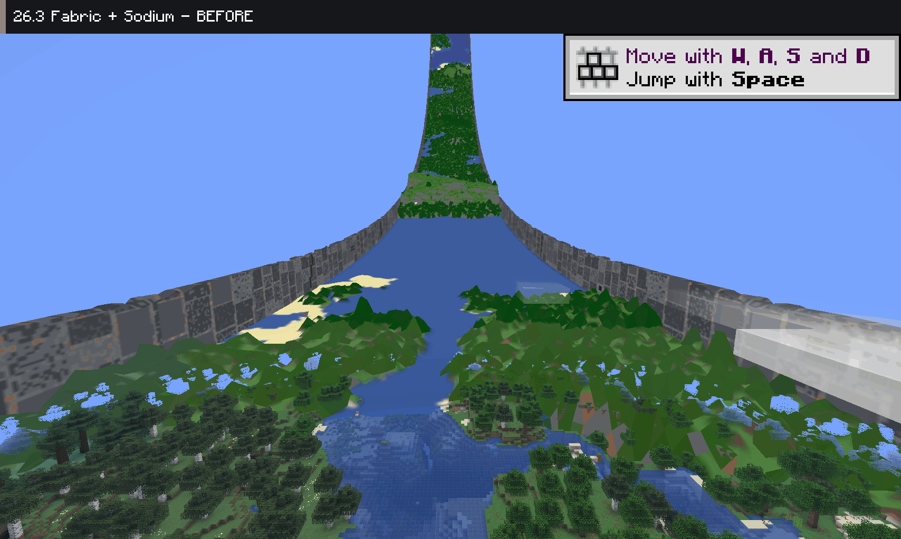
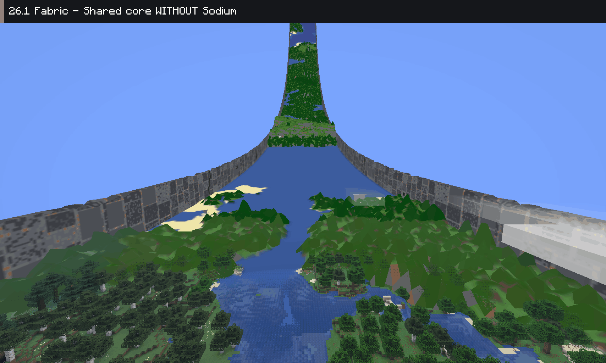
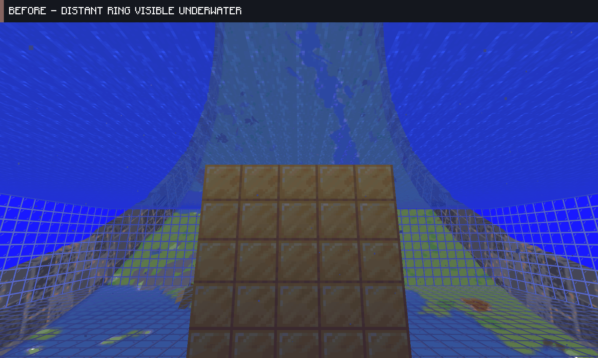
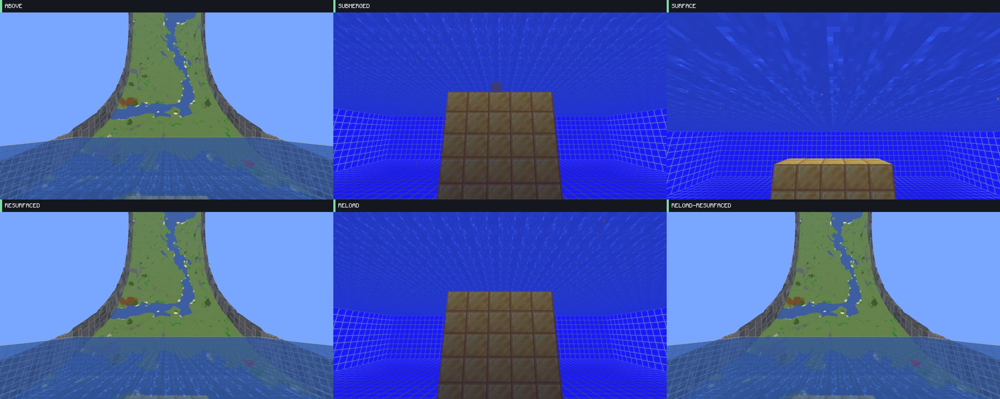
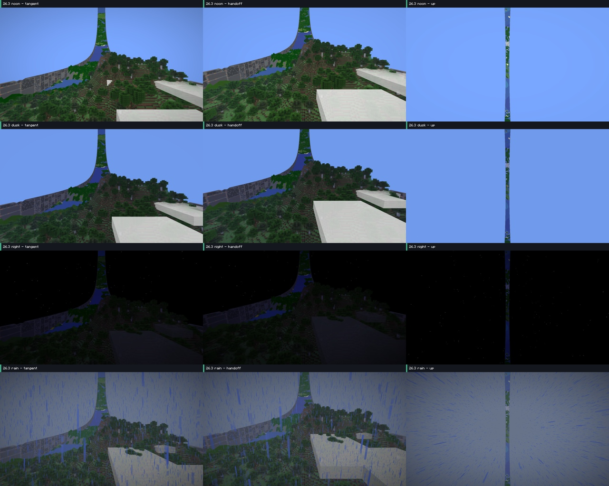

Development validation · 13 October 2026 · PR #292
Sodium: the same ring curve and handoff
The live terrain now uses RingWorld's shared projection, visibility and material rules. The large gaps in the original Sodium view are closed. These are real native Minecraft captures with labels added in Minecraft's font.
Before and after — 26.3 Fabric

Updated core, without and with Sodium — 26.1 Fabric

Underwater Atlas visibility — 26.3 Fabric
The distant Atlas is now skipped while the actual camera is in water. Nearby real blocks retain Minecraft's underwater fog. Resurfacing restores the normal ring, including after a submerged resource reload. This is shared RingWorld behaviour, independent of Sodium.


Native seam and wall checks
| Minecraft | Sodium | Fabric | NeoForge |
|---|
| 26.1 | 0.8.9 | Pass | Pass |
| 26.1.1 | 0.8.9 | Pass | Pass |
| 26.1.2 | 0.9.2 | Pass | Pass |
| 26.2 | 0.9.2 | Pass | Pass |
| 26.3 | 0.9.2 | Pass | Pass |
Additional checks cover correction toggles, resource reloads, curved objects, weather and dimension changes, exterior walls, and two-client visibility beyond the ring and across the seam.
Full terrain in noon, dusk, night and rain — 26.3 Fabric + Sodium

Native validation used macOS OpenGL. Other drivers, Vulkan, Iris/shader packs and arbitrary modpacks need separate validation. This draft has not changed the active Windows 1.4 release candidates.
Implementation and validation record · Source and evidence hashes